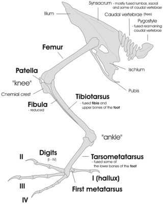
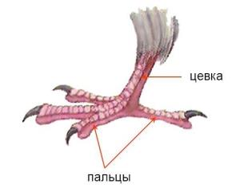
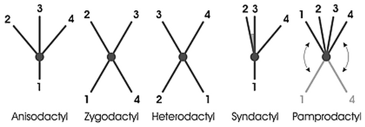

Главная > Внешний вид
Расположение пальцев на нижних конечностяхПтицы , как правило , пальцеходящие животные ( носком -walkers), который влияет на структуру скелета ноги. Они используют только их задние конечности ходить ( прямохождение ). Их передние конечности эволюционировали , чтобы стать крылья.
Большинство костей птиц ноги ( за исключением пальцев ног) слиты вместе или с другими костями, изменив свои функции в течение долгого времени.

Строение ноти птицы
Некоторые нижние кости стоп сливаются с образованием Цевки - третий сегментом ноги , характерной для птиц. Она состоит из слившихся distals и плюсневые II, III и IV. Плюсны я остаюсь разделенным в качестве основания первого пальца. Цевка является расширенной областью стопы, которая дает ногу дополнительной длину рычага.

Цевка
- Palmations и мочки позволяют плавать или помочь ходить по рыхлому грунту, такие как грязь. В перепончатой или palmated ноги птиц можно разделить на несколько типов:
- Лапчатая: только передние цифры (2–4) соединены лямками. Найдено в уток, гусей и лебедей, чаек и крачек и других водоплавающих птиц (птиц, фламинго, глупышей, егерей, гагар, буревестников, буревестников и скиммеров). Дайвинг уток также лопастный задний носок (1), и чаек, крачки и союзники имеют уменьшенный задний носок.
- Totipalmate: все четыре цифры (1–4) соединены лямки. Найдено в бакланов и болванов, пеликанов, бакланов, anhingas и фрегатов. Некоторые олуши имеют ярко окрашенные ножки, используемые в дисплее.
- Semipalmate: небольшая веб между передними цифрами (2–4). Найдено в некоторых зуйках (Eurasian dotterels) и кулики (малый песочник, ходули кулики, бартрамия, Пёстрый Улит и Виллет), AVOCET, цапли (только два пальца), все куропатка, а некоторые одомашненных породы курицы. Пловерс и чибисы имеют рудиментарный задний палец (1), а также кулики и их союзники уменьшенный и подняли задний палец едва касаясь землями. Песчанка является единственным кулик, имеющий 3 пальцев (трехпалая ноги).
- Лопастные: передние цифры (2–4) окаймлены долей кожи. Лопасти расширяться или сжиматься когда птица плавает. В поганках, лысухах, плавунчики, finfoots и некоторые лапчатая ноге уток на большом пальце (1). Поганки имеют больше перепонки между пальцами, чем лысухи и плавунчиками.

Расположение пальцев на нижней лапке птицы
|